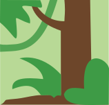

Bongo
(Tragelaphus eurycerus)
Bliskie zagrożenia
Wielkość populacji na wolności: Od 15 000 do 25 000
Bongo (Tragelaphus eurycerus) to płochliwy gatunek leśnej antylopy zamieszkujący lasy Afryki Środkowej. Ma sierść w kolorze jasnobrązowym z czerwonym odcieniem, na korpusie ma białe pionowe pasy, a także jasną sierść po wewnętrznej
stronie nóg. Ma też duże uszy oraz żółtą pręgę w kształcie litery V pod oczami. Wśród cech charakterystycznych tego gatunku można wymienić duże, spiralne, ustawione pionowo rogi. Samce i samice osiągają podobne rozmiary - od 1,1 do
1,3 m wysokości w kłębie i od 2,15 do 3,15 m długości. Samce są jednak znacznie cięższe i ważą średnio 310 kg w porównaniu do ważących 190 kg samic.
Gatunek jest bliski zagrożenia z powodu utraty siedlisk w wyniku wylesiania i przekształcania żerowisk w tereny rolne, a ponadto jest obiektem polowań, których celem jest zdobywanie trofeów myśliwskich w postaci dużych, ozdobnych
rogów tych zwierząt. Sześćdziesiąt procent populacji bongo leśnego zamieszkuje rezerwaty przyrody, w związku z czym zwierzęta te są objęte ochroną i zakazem polowań, jednak nadal zdarzają się przypadki kłusownictwa. W rezerwatach
przyrody prowadzone są ponadto działania mające na celu ochronę siedlisk bongo leśnych przed zniszczeniem.
| Kontynenty | Regiony | Biomy |
|---|---|---|
| Afryka | Republika Środkowoafrykańska, Demokratyczna Republika Konga, Wybrzeże Kości Słoniowej, Gwinea Równikowa, Gabon, Ghana, Liberia, Sierra Leone, Sudan Południowy, Kamerun, Kongo |
 |
| Wielkość grupy (bez młodych osobników) |
1-5 (maks. 1 samiec, samice do 4) |
|---|---|
| Wielkość grupy kawalerskiej samców (bez młodych osobników) |
1 |
| Wielkość grupy kawalerskiej samic (bez młodych osobników) |
1-5 |
| Hierarchia dominacji | Brak |
| Strategia rozrodcza | Poligynia |
| Zasady dotyczące dojrzałości | Matrylinearność: dojrzałe samce spokrewnione z osobnikiem alfa stają się wyrzutkami |
| Stosunek do człowieka | Płochliwość |
| Wielkość |
 1,20 m wysokości w kłębie 1,20 m wysokości w kłębie 1,20 m wysokości w kłębie 1,20 m wysokości w kłębie |
|---|---|
| Długość życia |
18 lat 18 lat |
| Waga |
260 kg 190 kg |
| Wiek dojrzałości płciowej | 2 lata |
|---|---|
| Wiek zakończenia okresu reprodukcyjnego | Śmierć |
| Liczba młodych przypadająca na okres godowy | 1 |
| Długość ciąży/inkubacji | 9 mies. |
| Okres międzyurodzeniowy | 24 mies. |
| Rozmnażanie w niewoli | Bardzo łatwe |
Potrzeby społeczne
Samice bongo leśnego żyją w niewielkich grupach ze swoim potomstwem i wspólnie szukają pokarmu w lasach deszczowych. Samce są samotnikami i żyją osobno, z wyjątkiem okresu godowego, kiedy to na pewien czas dołączają do stada samic.
Rozmnażanie
W okresie godowym samiec dołącza do stada samic i zaleca się do nich, delikatnie je poszturchując i trącając pyskiem, a następnie parzy się z nimi, jeśli są gotowe do rozrodu. Po trwającej 9,5 miesiąca ciąży samica rodzi jedno cielę, które pozostaje przy matce aż do 2. roku życia. Wówczas samce opuszczają matkę i rozpoczynają samotne życie, a samice pozostają w stadzie matki.
Ciekawostki
- Rogi służą wprawdzie bongo leśnym do walki (szczególnie w przypadku samców), jednak częściej pomagają w usuwaniu z drogi gałęzi i zarośli, gdy zwierzęta poszukują pożywienia w gęstych lasach.
- Bongo leśne są zwierzętami krepuskularnymi, co oznacza, że są najbardziej aktywne o świcie i o zmierzchu.
- W pierwszym tygodniu życia nowo narodzone cielę bongo leśnego pozostaje ukryte w poszyciu leśnym, a jego matka często powraca do niego, by je nakarmić.
- Istnieje niewielka grupa bongo leśnych, które zamieszkują tereny górskie w Kenii. Jest to podgatunek bongo leśnego zwany bongo górskim, który długo żył w izolacji od populacji leśnych.
- Zaobserwowano, że bongo leśne zjadają węgiel drzewny z drzew spalonych w wyniku uderzeń piorunów i pożarów lasu. Jest on dla nich najprawdopodobniej źródłem soli i minerałów.